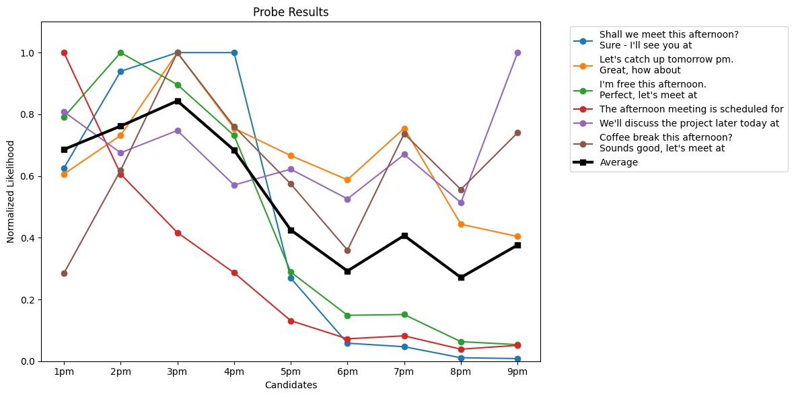
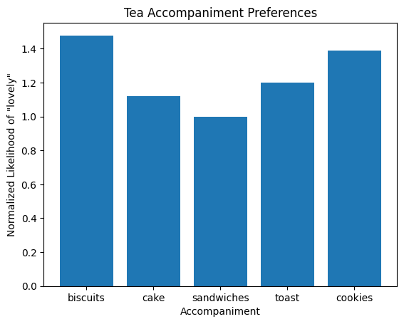

Computational Linguistics
LLMs are cool - we can make them do all sorts of tricks. But beyond the generative applications there’s a whole bunch of interesting linguistic analysis we can do, especially with base models that are essentially this very compressed representation of the world of text. In this post I wanted to show a few quick experiments I did, in the hope that they might inspire you to try something similar.
What time is ‘Afternoon’?
It occurred to me the other day that I could use LLMs to disambiguate the meaning of ‘afternoon’, and other phrases (‘a dozen’, ‘soon’ etc). For example, we can think up some sentences that both specify that something is happening in the afternoon and then formalize the time. By plotting the likelihood of different times, we can see how the model interprets the word:

Pretty neat! It turns out ‘afternoon’ is most likely to be around 3pm.
Dinner Time:
We can do this same thing for meal times:

Notice I chose the ranges for the charts carefully. It turns out this method of looking at liklihood gets messed up a little when things tokenize into multiple tokens. For example, for ‘breakfast’ 10am might be unlikely BUT after a 1 is generated the options for the token after that are 0, 1 or 2, with 0 being very likely. So the average liklihood of “10am” is high, even though it’s not a likely time for breakfast. Not to mention the variants like ‘noon’, 13:00, etc. So, take this with a grain of salt!
Probing deeper
One alternative is to probe some (fixed) token as our measure, and change other parts of the context. For example, let’s see which accompaniment to “tea” is best by looking at the likelihood of “lovely” at the end of this prompt: “Shall we have some tea and {X}? That would be lovely”.

Biscuits are the clear winner! Speaking of, I’m off to make a cuppa and grab a biscuit. Until next time!
PS: Exploring this yourself
Here’s some code to get you started:
Load the model:
import torch
from transformers import AutoModelForCausalLM, AutoTokenizer
from datasets import load_dataset
from torch.nn.functional import softmax
from tqdm.auto import tqdm
device = "cuda"
model_id = "meta-llama/Meta-Llama-3-8B"
tokenizer = AutoTokenizer.from_pretrained(model_id)
tokenizer.pad_token = tokenizer.eos_token
model = AutoModelForCausalLM.from_pretrained(
model_id,
torch_dtype = torch.bfloat16
)
model.to(device);Sample:
text = """Shall we meet this afternoon?\nSure - I'll see you at"""
candidates = [" 1pm", " 2pm", " 3pm", " 4pm", " 5pm"]
text_inputs = tokenizer(text, return_tensors="pt", padding=True, truncation=True).input_ids.to(device)
candidate_inputs = tokenizer([text + c for c in candidates], return_tensors="pt", padding=True, truncation=True).input_ids.to(device)
print(text_inputs.shape, candidate_inputs.shape)
model_outputs = model(candidate_inputs)
logits = model_outputs.logits
scores = []
for i, c in enumerate(candidates):
# Calculate perplexity of the completion
completion_ids = candidate_inputs[i].unsqueeze(0)
completion_logits = logits[i].unsqueeze(0)
# Start is start of completion
start = text_inputs.shape[1]
# End is where padding starts
end = completion_ids.shape[1]
for i in range(start, end):
if completion_ids[0, i] == tokenizer.pad_token_id:
end = i
break
token_indices = completion_ids[0, start:end]
token_logits = completion_logits[0, start:end]
# Calculate perplexity
perplexity = 0
for i, t in enumerate(token_indices):
perplexity -= token_logits[i, t]
perplexity = perplexity / len(token_indices)
perplexity = torch.exp(perplexity)
scores.append(perplexity.item())
from matplotlib import pyplot as plt
plt.bar(candidates, scores)
plt.title(text + " ...")
plt.xlabel("Completion")
plt.ylabel("Score")